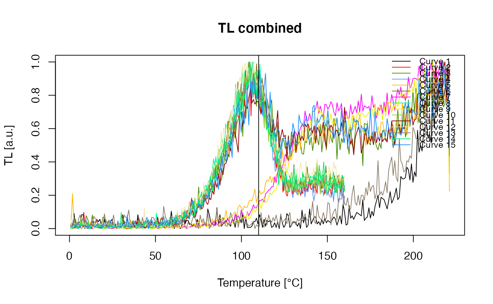
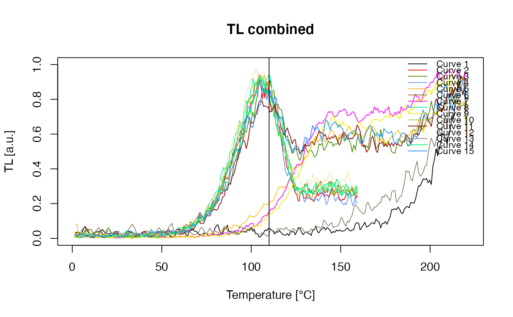

Plot function for an RLum.Analysis S4 class object
Source:R/plot_RLum.Analysis.R
plot_RLum.Analysis.RdThe function provides a standardised plot output for curve data of an RLum.Analysis S4 class object
The function produces a multiple plot output. A file output is recommended (e.g., pdf).
curve.transformation
This argument allows transforming continuous wave (CW) curves to pseudo
(linear) modulated curves. For the transformation, the functions of the
package are used. Currently, it is not possible to pass further arguments to
the transformation functions. The argument works only for ltype
OSL and IRSL.
Please note: The curve transformation within this functions works roughly, i.e. every IRSL or OSL curve is transformed, without considering whether it is measured with the PMT or not! However, for a fast look it might be helpful.
Usage
plot_RLum.Analysis(
object,
subset = NULL,
nrows,
ncols,
abline = NULL,
combine = FALSE,
records_max = NULL,
curve.transformation,
plot.single = FALSE,
...
)Arguments
- object
RLum.Analysis (required): S4 object of class
RLum.Analysis- subset
named list (optional): subsets elements for plotting. The arguments in the named list will be directly passed to the function get_RLum (e.g.,
subset = list(curveType = "measured"))- nrows
integer (optional): sets number of rows for plot output, if nothing is set the function tries to find a value.
- ncols
integer (optional): sets number of columns for plot output, if nothing is set the function tries to find a value.
- abline
list (optional): allows to add ab-lines to the plot. Argument are provided in a list and will be forward to the function abline, e.g.,
list(v = c(10, 100))adds two vertical lines add 10 and 100 to all plots. In contrastlist(v = c(10), v = c(100)adds a vertical at 10 to the first and a vertical line at 100 to the 2nd plot.- combine
logical (with default): allows to combine all RLum.Data.Curve objects in one single plot.
- records_max
numeric (optional): limits number of records shown if
combine = TRUE. Shown are always the first and the last curve, the other number of curves to be shown a distributed evenly, this may result in fewer curves plotted as specified. This parameter has only an effect for n > 2.- curve.transformation
character (optional): allows transforming CW-OSL and CW-IRSL curves to pseudo-LM curves via transformation functions. Allowed values are:
CW2pLM,CW2pLMi,CW2pHMiandCW2pPMi. See details.- plot.single
logical (with default): global par settings are considered, normally this should end in one plot per page
- ...
further arguments and graphical parameters will be passed to the
plotfunction.Supported arguments:
main,mtext,log,lwd,ltytype,pch,col,norm(see plot_RLum.Data.Curve),xlim,ylim,xlab,ylab, ...and for
combine = TRUEalso:sub_title,legend,legend.text,legend.pos(typical plus 'outside'),legend.col,smooth.All arguments can be provided as
vectororlistto gain in full control of all plot settings.
Note
Not all arguments available for plot will be passed and they partly do not behave in the way you might expect them to work. This function was designed to serve as an overview plot, if you want to have more control, extract the objects and plot them individually.
Author
Sebastian Kreutzer, Institute of Geography, Heidelberg University (Germany) , RLum Developer Team
How to cite
Kreutzer, S., 2024. plot_RLum.Analysis(): Plot function for an RLum.Analysis S4 class object. Function version 0.3.15. In: Kreutzer, S., Burow, C., Dietze, M., Fuchs, M.C., Schmidt, C., Fischer, M., Friedrich, J., Mercier, N., Philippe, A., Riedesel, S., Autzen, M., Mittelstrass, D., Gray, H.J., Galharret, J., Colombo, M., 2024. Luminescence: Comprehensive Luminescence Dating Data Analysis. R package version 0.9.25. https://r-lum.github.io/Luminescence/
Examples
##load data
data(ExampleData.BINfileData, envir = environment())
##convert values for position 1
temp <- Risoe.BINfileData2RLum.Analysis(CWOSL.SAR.Data, pos=1)
##(1) plot (combine) TL curves in one plot
plot_RLum.Analysis(
temp,
subset = list(recordType = "TL"),
combine = TRUE,
norm = TRUE,
abline = list(v = c(110))
)

##(2) same as example (1) but using
## the argument smooth = TRUE
plot_RLum.Analysis(
temp,
subset = list(recordType = "TL"),
combine = TRUE,
norm = TRUE,
smooth = TRUE,
abline = list(v = c(110))
)
